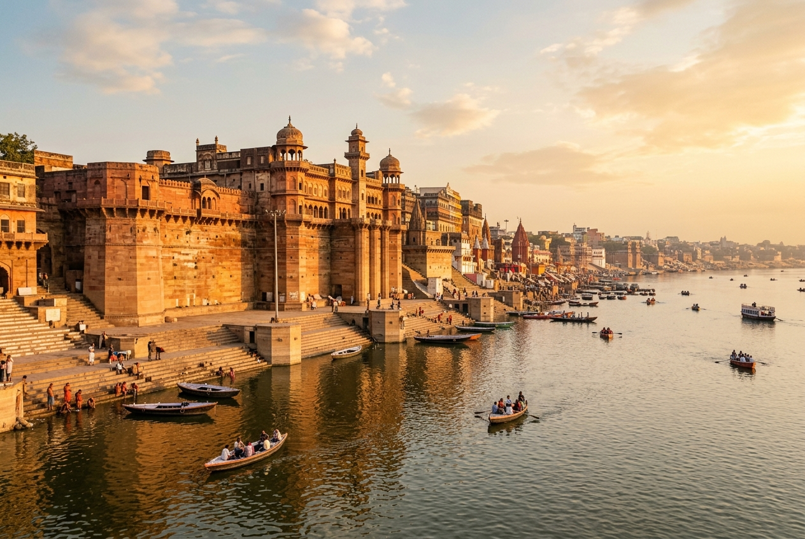
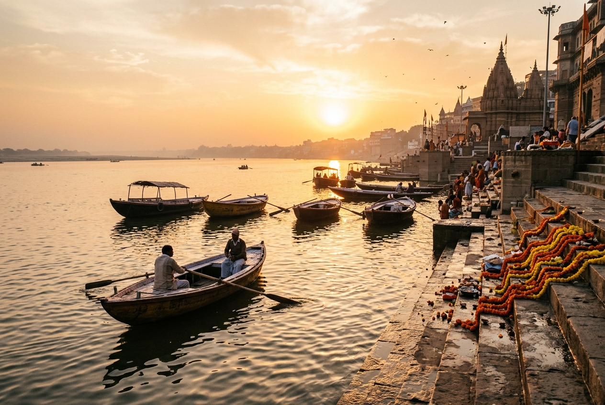
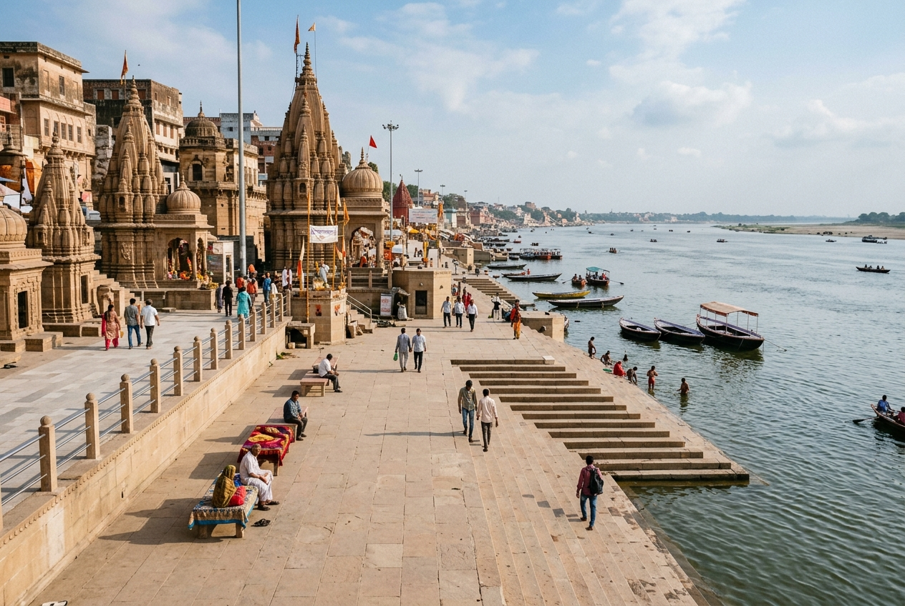

Shivala Ghat
Tracing Varanasi's Royal Riverfront
Dominating Varanasi's southern riverfront with its massive fortress walls and grand red sandstone architecture, Shivala Ghat stands as a monument to 18th-century royal patronage. Famously home to the Chet Singh Palace, it serves as a bridge between Varanasi's temple traditions and regional royal histories.
📜 History of Shivala Ghat
Balwant Singh & Chet Singh
In the mid-18th century, Raja Balwant Singh and his successor Raja Chet Singh—the rulers of Benares—acquired the land and fortified the riverfront. They built a grand fortress-palace that serves as the visual centerpiece of the ghat, giving the area a distinct architectural character.
The Historic Clash of 1781
On August 16, 1781, Shivala Ghat witnessed a legendary battle. Warren Hastings, the first British Governor-General of India, attempted to arrest Raja Chet Singh within the palace for refusing to pay extra tribute. A sudden uprising by the Raja's loyal troops overwhelmed the British forces, allowing Chet Singh to escape down the steep sandstone walls into the Ganga using a rope made of tied turbans.
The Annexation & Aftermath
Following the escape, the British confiscated the fort and ghat. In the 19th century, the British administration partitioned the palace, granting sections to various regional rulers and the family of the exiled King of Delhi, Bahadur Shah Zafar.
🏰 Royal Patronage & Chet Singh Palace
Chet Singh Palace
The grand Chet Singh Palace is a fortified mansion featuring massive sandstone bastions, heavy battlements, and arched balconies. Built to act as both a palace and a defensive fortress, its heavy stone facades contrast sharply with the delicate temple spires elsewhere in Kashi.
The Nepalese & Maharastra Connections
Over the centuries, the ghat attracted patronage from other regional royal families. The Nepalese Royal Family and the Maratha chieftains built smaller havelis and shrines adjacent to the main palace, making Shivala a multicultural enclave of royal architecture.
🛕 The Royal Shiva Temples
True to its name ("Shivala" meaning Temple of Shiva), the ghat features several exquisite Shiva temples built by royal patrons. The central Shivala Temple houses a large black stone Shiva Lingam. These shrines are notable for their octagonal sanctums, detailed floral relief carvings, and stone spires (Shikharas) rising high above the fortress walls, where daily rituals and Vedic chanting are performed by resident priests.
📐 Architectural Character
Shivala Ghat displays a unique blend of military fortification and traditional Hindu palace architecture. Key features include heavy circular bastions at the river level to break flood currents, grand arched gateways (Darwajas) leading to interior courtyards, detailed sandstone lattice screens (Jalis) for ventilation, and ornate balconies (Jharokhas) looking out over the Ganga.
🎨 Cultural Heritage & Budhwa Mangal
- Budhwa Mangal Festival: Historically, Shivala Ghat was a central venue for this famous music festival. Rulers and citizens gathered on large decorated boats (Bajras) anchored off the ghat to listen to classical Hindustani music through the night.
- Sanskrit Learning: The royal families established several Sanskrit schools (Pathshalas) nearby, which continue to teach Vedic literature to young scholars.
- Boat Building: The wide flat platforms of the ghat have historically been used by local carpenters to repair traditional wooden rowboats.
🛶 Nearby Heritage & Connections
- Chet Singh Ghat: Located immediately adjacent, sharing the massive fortress facade and representing the main palace river entrance.
- Harishchandra Ghat: Located a short walk to the north, one of the oldest cremation ghats in Varanasi.
- Kedar Ghat: Located further north, famous for its red-and-white striped Kedareshwar Temple and South Indian pilgrim community.
📅 Historical Timeline
Fortification by Raja Chet Singh
Raja Balwant Singh and Chet Singh acquire the land, constructing the massive sandstone palace and fortress walls to establish their royal presence along the riverfront.
The Battle of Shivala
Warren Hastings attempts to arrest Raja Chet Singh. Following a battle on the steps, the Raja escapes down the palace walls to safety across the Ganga.
Royal Partition
The British confiscate the fort, later partitioning it among regional rulers, including the Royal House of Nepal and families of Delhi's exiled royalty.
Heritage Site & Cultural Venue
Now preserved as a major historical landmark, showcasing Benares' unique combination of defensive architecture and temple heritage.
💡 Interesting Facts About the Ghat
- Turban Rope Escape: The escape of Raja Chet Singh using tied turbans is one of the most famous tales of resistance against British East India Company rule.
- Budhwa Mangal Boats: During the historical music festival, hundreds of floating lamps were released from the ghat steps, lighting the entire river.
- Dual Purpose: It is one of the very few ghats designed to serve both as a spiritual bathing site and a heavily defended military fort.
- Nepal Royal Trust: Part of the surrounding estates is still managed by trusts connected to Nepalese heritage.
- Bastion Shield: The massive circular towers at the base are solid stone, built specifically to deflect heavy tree trunks floating down during monsoon floods.
- Mural Backdrops: The high sandstone walls of Shivala Fort are frequently used by local art groups to paint massive murals depicting the history of Benares.
Visual Heritage Gallery

Chet Singh Palace Facade
The grand 18th-century fortress palace constructed with red sandstone along the Ganga.

Boats at Shivala Ghat
Rowboats anchored along the steps, reflecting the historic music festival traditions.

Royal Shiva Shrines
Dignified stone temples built by royal patrons inside the palace courtyard.

Sandstone Jalis & Carvings
Intricate stone lattice work and decorative balconies typical of Maratha-Benares architecture.